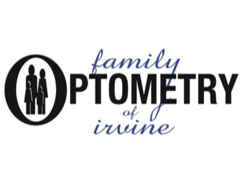
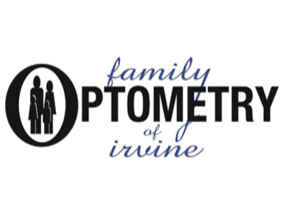
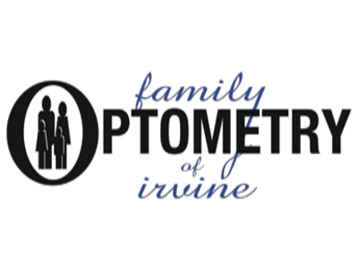

Austin Yu
I am passionate about biology because it is the most tangible of all the natural sciences. For example, I can see how the human body functions, or think concretely about cellular processes, or consider how ecological systems fit together. Also, I am interested in the interplay of medicine and technology. This interest in the medical field has led to my desire to become a doctor. To gain more experience in the medical field, I am looking for a pre-med related internship.
I have experience volunteering, interning, and participating in many medical-related events. First, I have been a student volunteer at Fountain Valley Hospital for more than two years. In that capacity, I conducted rounds with patients to assist them with their basic care needs. I also operated the nurse call systems in different hospital departments, helping out both doctors and nurses in taking care of their patients.
Another experience I have is participating in the UCI Summer Surgery Program. I was able to observe many complicated surgeries, interact with medical students, doctors, and staff, as well as practicing surgical skills for the future. The most memorable surgeries I witnessed were a craniotomy and a hip replacement; both were sights I never could have imagined seeing up close (the surgeon’s commentaries were very insightful to my learning).
I have also worked at Family Optometry of Irvine as a paid intern. I interacted with patients and assisted with office operations, which gave me a better understanding of the eye care industry. My optometry internship inspired me to write a 15 page research paper about the impact of vision impairment on overall patient health. Although vision is so important to well-being, there are issues of accessibility for a large portion of the population in the United States.
In addition to these activities, I have begun my research assistant position at the UCR Brain Game Center this spring quarter. So far, I have tested and assisted in the feedback of multiple brain-training games, interacting with actual participants through testing them on the games through zoom, as well as researching and writing papers on neuroscience-related studies. As a student on the pre-med track, I chose this neuroscience-related research because I felt that it was more applicable and practical to my long-term goals than a regular protein synthesis lab. Not only am I able to learn more about the brain and possible methods to improve multiple cognitive functions through gaming, the participant interaction I experience every session helps with skills I will need in the future as a doctor.
I have many skills that can be useful in an internship/volunteer/job position. I can proficiently use all of Microsoft office (excel, powerpoint, word) as well as its google counterparts (sheets, slides, docs). I have great public speaking, leadership, and interaction skills from my experience of volunteering in hospitals, school clubs, and taking debate classes. Not to mention, I am CPR certified from my time at the UCI Summer Surgery Program.
Experience
Research Assistant
• Tested and assisted in the feedback of multiple brain-training games produced by the company
• Interacted with actual participants through testing of company games
• Researched and wrote papers on neuroscience-related studies
Paid Intern
• Assisted doctor in eye exams, which ranged from conducting poster eye tests to using computer machines
• Gained valuable experience from interacting with patients, doctors, and eye wear company representatives
• Maintained and updated patient database (learned about healthcare plans and private pay
Volunteer
• Checked on patients through rounds and greeted visitors at the front door
• Helped doctors and nurses with patient check-ups and restocking the storage rooms
• Operated the nurse call systems in different departmens, relaying messages from patients to nurses
Education
UC Riverside
Portfolio
.jpg)
 

.jpg)
